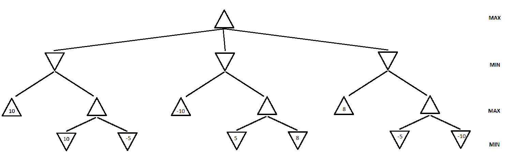
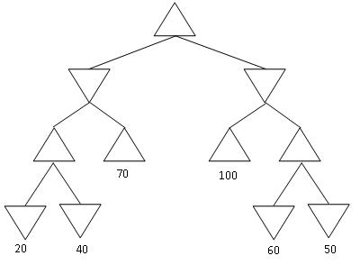
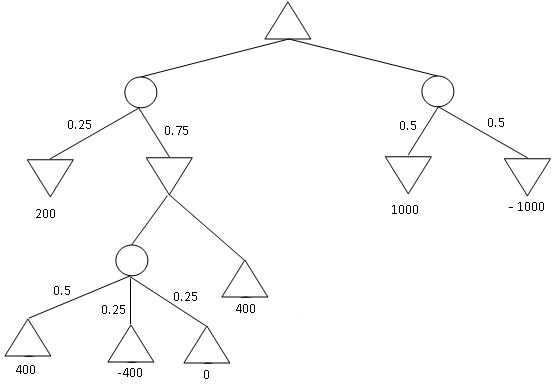

Assignment 2
IMPORTANT NOTE: NO LATE SUBMISSIONS WILL BE ACCEPTED FOR THIS ASSIGNMENT
Game Search
Problem 1
Max: [4308: 25 Points,
5360: 20 Points]
Draw the full Minmax tree for the game of TicTacToe starting from the
given game state. Calculate the minmax value of every node and what the
optimal action for the MAX player (X) to take is. (Note: Winning
results in a payoff
of +1 and losing a payoff of -1)
Figure 1: A TicTacToe Game State.
Problem 2
Max: [4308: 30 Points,
5360: 20 Points]

Figure 2. A game search tree.
a.
In the game search tree of Figure 2, indicate what nodes will be pruned
using alpha-beta search, and what the mimax values are for
the rest of the nodes. Assume that, when given a choice, alpha-beta
search expands nodes in a left-to-right order. Also, assume the MAX
player plays first. Finally incidcate which action the Minmax algorithm
will pick to exectute.
b. This question is also on
the game search tree
of Figure 2. Suppose we are given some additional knowledge about the
game: the maximum utility value is 10 and the minimum utility is -10,
i.e., it is not mathematically
possible for the MAX player to get an outcome greater than 10 or lesser
than -10. How can
this knowledge be used to further improve the efficiency of alpha-beta
search? Indicate the nodes that will be pruned using this improvement.
Again, assume that, when given a choice, alpha-beta search expands
nodes in a left-to-right order, and that the MAX player plays first.
Problem 3
Max: [4308: 20 Points,
5360: 20 Points]

Figure 3: Yet another game search tree
Consider
the MINIMAX tree above. Suppose that we are the MAX player, and we
follow the MINIMAX algorithm to play a full game against an opponent.
However, we
do not know what algorithm the opponent uses.
Under
these conditions, what is the best possible outcome of playing the full
game for the MAX player? What is the worst possible outcome for the MAX
player? Justify your answer.
NOTE:
the question is not asking you about what MINIMAX will compute for the
start node. It is asking you what is the best and worst outcome of a complete
game under
the assumptions stated above.
Problem 4
Max: [4308:25 Points,
5360: 20 Points]

Figure 4: An Expectiminmax tree.
Find
the value of every non-terminal node in the expectiminmax tree given
above. Also indicate which action will be performed by the algoirithm.
What
does the MinMax value obtained by the root node represent. For a
particular game, what is the maximum and minmum actual payoff the MAX
player can get if MIN plays the optimal strategy (according to Expectiminmax). What if the opponent plays a random strategy?
Problem 5 (Extra Credit for 4308, Required for 5360)
Max: [4308: 20 Points EC,
5360: 20 Points]
Suppose that you want to implement an algorithm tht will compete on a
two-player deterministic game of perfect information. Your opponent is
a supercomputer called DeepGreen. You do not know what algorithm
DeepGreen uses. You
are given a library function DeepGreenMove(S), that takes any state S
as an argument, and returns the outcome of the move that DeepGreen will
choose for
that state S (more precisely, DeepGreenMove (S) returns the state
resulting from the opponent's move).
Write
an algorithm in pseudocode (following the style of the Minimax
pseudocode) that will always make an optimal decision given the
knowledge we have about DeepGreen. You are free to use the library
function DeepGreenMove(S) in your pseudocode. How does this compare to
Minimax wrt optimality of solution and the number of states explored.
How to submit
The assignment should be submitted via Canvas.
Scan or Type the solutions for all the other Tasks together and create a single pdf titled assignment2_<net-id>.pdf.
Submission checklist
Are the solutions to remaining tasks in a pdf file titled assignment1_<net-id>.pdf? (where <net-id> is replaced with
your net id)
Did you upload the file on the submission page in Canvas and then click on 'Submit Assignment' to ensure that a submission is made?